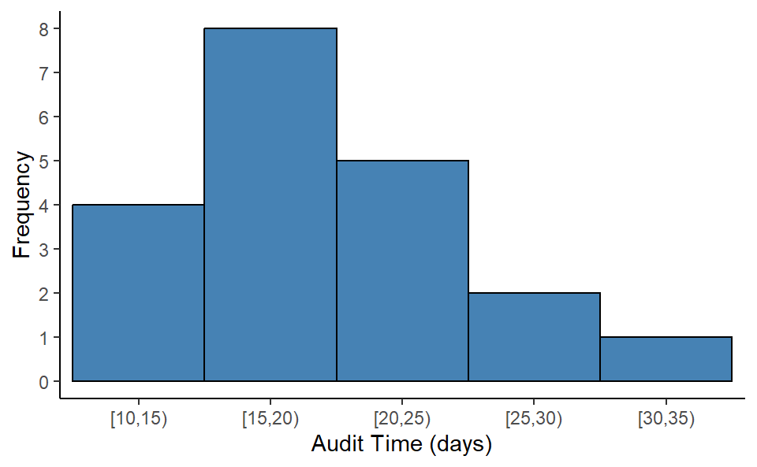

Table 2.2: Frequency distribution of Soft Drink Purchases
Soft Drink
Frequency
Coke Classic
19
Diet Coke
8
Dr. Pepper
5
Pepsi
13
Sprite
5
Relative Frequency and Percent Frequency Distributions
Relative Frequency \(=\frac{Frequency \ \ of \ \ the \ \ class}{n}\)
The percent frequency of a class is the relative frequency multiplied by 100.
2.2 Bar Charts and Pie Charts
Bar chart: A graphical device for depicting qualitative data that have been summarized in a frequency, relative frequency, or percent frequency distribution.
Pie chart: A graphical device for presenting data summaries based on subdivision of a circle into sectors that correspond to the relative frequency for each class.
From the frequency table of soft drinks purchase, we will develop relative and percent frequency distribution (see Table 2.3) and will construct a bar-chart and pie-chart.
Code
MBA %>%count(`Soft Drink`) %>%mutate(RF=n/sum(n),PF=RF*100) %>%kable(digits =2,col.names =c("Soft Drink","Frequency (f)","Relative Frequency(Rf)", "Percent Frequency (Pf)"),align =c("l","c","c","c"))
Table 2.3: Frequency, Relative And Percent Frequency Distributions Of Soft Drink Purchases
Determine the number of non overlapping classes(k).
Determine the width of each class.
Determine the class limits.
2.4 Frequency Distribution of quantitative data
Here, \(n=20\), Smallest value=12, Largest value=33.
Determine number of classes, \(k\) as : \(k=\sqrt n=\sqrt 20=4.47\approx5\). So \(5\) is the number of classes.
Class width \(w\) as: \(w=\frac{Largest-Smallest}{k}=\frac{33-12}{5}=4.2\approx 5\)
Class limits: Start from near smallest value (12) say from \(10\) we have the following classes (exclusive method-where upper bound of the class is excluded):
[10,15), [15,20), [20,25), [25,30), and [30,35)
Now count the data values in corresponding classes and thus we have the frequency distribution. Once we have the frequency distribution then we also can produce the relative and percent frequency distribution (Table 2.4 ).
Table 2.4: Frequency, relative frequency (rf) and percent frequency (pf) distribution for the audit time data (n=20)
Audit Time (days)
Frequency (f)
Rf
Pf
[10,15)
4
0.20
20
[15,20)
8
0.40
40
[20,25)
5
0.25
25
[25,30)
2
0.10
10
[30,35)
1
0.05
5
2.5 Histogram
A common graphical presentation of quantitative data is a histogram. This graphical summary can be prepared for data previously summarized in either a frequency, relative frequency, or percent frequency distribution.
Code
#png(filename="HISTOGRAM.png", width=600, height=600)fd %>%ggplot(aes(x=Audit_clas,y=n))+geom_col(width =1,col="black",fill="steelblue")+scale_y_continuous(breaks =0:8)+theme_classic()+labs(x="Audit Time (days)",y="Frequency")#dev.off()

Figure 2.3: HISTOGRAM FOR THE AUDIT TIME DATA
2.6 HISTOGRAM and shape of the distribution
2.7 Cumulative Distributions
A variation of the frequency distribution that provides another tabular summary of quantitative data is the cumulative frequency distribution.
2.8 The Stem-and-Leaf Display
The techniques of exploratory data analysis consist of simple arithmetic and easy-to-draw graphs that can be used to summarize data quickly. One technique—referred to as a stem-and-leaf display—can be used to show both the rank order and shape of a data set simultaneously (Anderson and Sweeney 2011).
Steps to Construct a Stem-and-Leaf Diagram
(1) Divide each number into two parts: a stem, consisting of one or more of the leading digits, and a leaf, consisting of the remaining digit.
(2) List the stem values in a vertical column.
(3) Record the leaf for each observation beside its stem.
(4) Write the units for stems and leaves on the display.
Example 2.2 Here are the number of questions answered correctly on an aptitude test given to 50 individuals recently interviewed for a position at Haskens Manufacturing.
The decimal point is 1 digit(s) to the right of the |
6 | 89
7 | 233566
8 | 01123456
9 | 12224556788
10 | 002466678
11 | 2355899
12 | 4678
13 | 24
14 | 1
Exception
In some data sets, providing more classes or stems may be desirable. One way to do this would be to modify the original stems as follows: For example, divide stem 5 into two new stems, 5L and 5U. Stem 5L has leaves 0, 1, 2, 3, and 4, and stem 5U has leaves 5, 6, 7, 8, and 9. This will double the number of original stems. However, there may be various type of data in practical situations. So, we have to figure out the suitable stem-and-leaf plot.
Example 2.3: Construct a stem-and-leaf plot from the following data:
The decimal point is at the |
1 | 00
2 | 000
3 | 00
4 |
5 | 00000
6 |
7 | 0000
8 | 0000
2.9 Exercises
2.1 A doctor’s office staff studied the waiting times for patients who arrive at the office with a request for emergency service. The following data with waiting times in minutes were collected over a one-month period.
Use class interval/width of 5 in the following (start your class limit from 0):
Show the frequency distribution.
Show the relative frequency distribution.
Show the cumulative frequency distribution.
Show the cumulative relative frequency distribution.
What proportion of patients needing emergency service wait less than 10 minutes or less?
2.2 A shortage of candidates has required school districts to pay higher salaries and offer extras to attract and retain school district superintendents. The following data show the annual base salary ($1000s) for superintendents in 20 districts in the greater Rochester, New York, area (The Rochester Democrat and Chronicle, February 10, 2008).
2.3 NRF/BIG research provided results of a consumer holiday spending survey (USA Today, December 20, 2005). The following data provide the dollar amount of holiday spending for a sample of 25 consumers.
Anderson, David R., and Dennis J. Sweeney. 2011. Statistics for Business and Economics. 11e [ed.]. Australia ; Mason, Ohio: South-Western Cengage Learning.